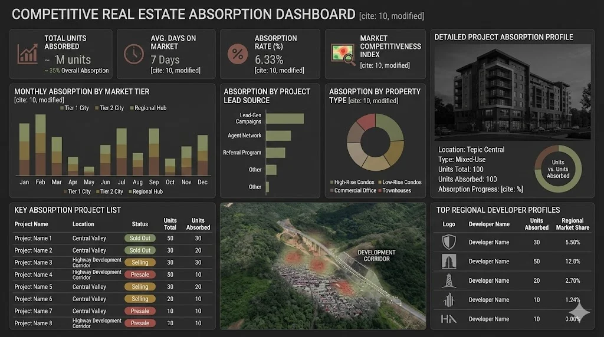

Estrategia ejecutiva para el lanzamiento de Nuevos Proyectos enfocados al Usuario Final, con medición dual de Market Share y análisis real de absorción en Tepic, Xalisco y Compostela.
2026 exige precisión estratégica, no intuición histórica.
Definiremos la estructura exacta de producto, precio y posicionamiento para capturar al Usuario Final antes de la saturación competitiva.
Tres fuerzas están redefiniendo la absorción inmobiliaria en la región.
Cada una exige una decisión estratégica clara en producto, precio y territorio.
El estudio parte de Tepic y Xalisco como núcleo operativo, incorpora Compostela como corredor activo de expansión y considera la presión inmobiliaria de las zonas de mayor crecimiento estatal como referencia ampliada para entender hacia dónde se desplaza la demanda en Nayarit.
Implicación: La plusvalía se captura antes del lanzamiento formal de proyectos.
Implicación: La propuesta de valor debe construirse alrededor de estilo de vida, no solo ubicación.

Implicación: El precio de salida no puede definirse sin medir velocidad real de ventas.
Cada módulo responde a una pregunta de dirección real. Cada métrica tiene uso directo en la mesa de decisiones.
Medición dual: participación contra inventario total y contra absorción real de la competencia.
Resultado: claridad objetiva sobre la posición actual en el mercado.
Benchmark a 8 desarrolladores clave: precio/m², amenidades, estrategia comercial y descuentos. Validación con minería de datos registrales y notarías estratégicas.
Perfilamiento del Usuario Final por NSE, tipo de financiamiento, motivación de compra y amenidades decisivas.
La lectura se concentra en compradores potenciales y demanda real, para entender qué tipo de producto puede absorber mejor cada zona y con qué capacidad financiera.
FODA cruzado: posicionamiento real de marca, percepción vs competidores y riesgos de confusión comercial. Decisiones basadas en ventaja defendible, no en reputación histórica.
Diseñada para construir una lectura clara del comportamiento de compra en las zonas núcleo del estudio, con enfoque exclusivo en demanda real, capacidad financiera y preferencias de producto del Usuario Final.
Diseñada para Dirección cuando se requiere una lectura más robusta por zona, con mayor profundidad cuantitativa del Usuario Final y una comprensión más sólida del comportamiento de compra en el corredor de expansión.
La muestra cuantitativa de Usuario Final no sustituye las demás capas del estudio.
La lectura competitiva, el benchmark, la validación transaccional y el análisis del mercado continúan desarrollándose de forma independiente dentro de la metodología general, pero no forman parte del conteo de encuestas.
El estudio no termina en un PDF.
Se convierte en una herramienta de consulta estratégica para Dirección y Gerencia Comercial.
La Dirección consulta Market Share, absorción, precios por m² y escenarios comparativos en tiempo real — sin reportes intermedios.
Proyección de precio y absorción antes del lanzamiento oficial. Decisiones antes de comprometer inversión.
El asistente opera exclusivamente con la data recopilada para PINSA. Sin acceso de terceros.
Acceso gratuito durante 1 mes post-entrega. PINSA operará con un asistente de consulta estratégica basado en los datos del estudio — una capacidad poco común en el mercado local.
Cada semana tiene entregables concretos. Nada queda al aire.
Instrumentos de medición: Mystery Shopper y Encuestas.
Levantamiento cuantitativo segmentado por zona con enfoque exclusivo en Usuario Final: Tepic, Xalisco y Compostela / corredor de expansión.
La muestra se trabaja por territorio para evitar mezclar comportamientos distintos de mercado.En la versión integral, la profundidad de muestra por zona aumenta para fortalecer precisión y lectura comparativa del corredor de expansión.
Absorción, Market Share y estrategias de posicionamiento.
Informe ejecutivo, presentación y habilitación del Asistente.
Inversión del Proyecto
+ IVA · Todo incluido
Inversión del Proyecto
+ IVA · Todo incluido
La diferencia entre ambas versiones responde a profundidad de muestra, cobertura territorial y nivel de precisión requerido para la decisión.
Todos los viáticos, traslados y gastos de investigación de campo en Tepic, Xalisco y Compostela están cubiertos al 100% dentro de esta inversión.
La versión integral amplía la profundidad territorial de la muestra conforme al alcance validado.
PINSA no necesita más información.
Necesita claridad accionable para dominar la expansión 2026.